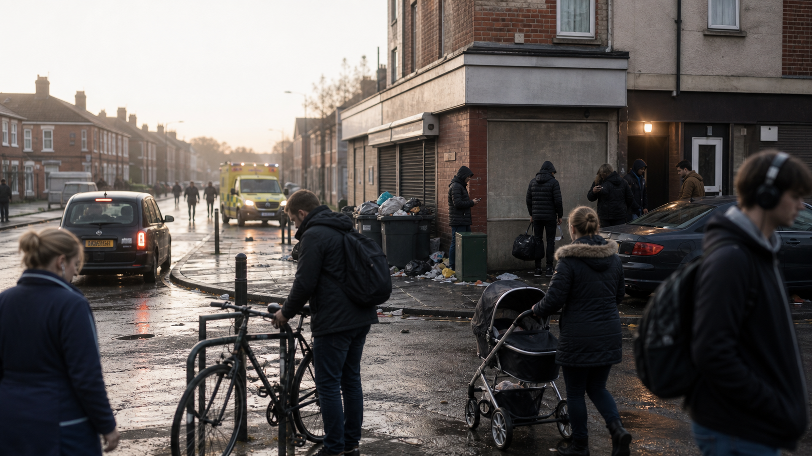

Source notes
- The World Series of Poker Reveals Full Summer 2026 Series Schedule, World Series of Poker — 2026 dates, 100 bracelet events, Main Event date, 2025 record context.
- 2026 57th Annual World Series of Poker Tournament Schedule, World Series of Poker — event schedule cross-check.
- The World Series of Poker Signs Multi-Year Agreement with ESPN to Air Final Table Live, World Series of Poker — ESPN return, Aug. 3–5 final table, WSOP quote, 2025 series records.
- ESPN and World Series of Poker Reach Multi-Year Agreement to Bring Main Event Back to ESPN Beginning This Summer, ESPN Press Room — 100+ hours of coverage, ESPN App, final-table window.
- World Series of Poker Returning to ESPN Beginning July 2, ESPN — broadcast context and 2025 champion context.
- 2026 WSOP Main Event Final Table Takes Place August 3-5, PokerNews — 20-day break, coverage structure, final-table schedule.
- 2026 WSOP Main Event Guide, PokerNews — Main Event logistics cross-check.
- ESPN to Broadcast World Series of Poker Main Event Live in August, CardPlayer — broadcast agreement cross-check.
- WSOP Main Event Returns to ESPN, Final Table Dates Set, Las Vegas Review-Journal — Las Vegas and final-table schedule context.
- WSOP 2026: The Ultimate Player Guide, PokerFuse — 2026 event overview and Main Event guide.
- 2026 WSOP World Series of Poker Series Listing, PokerAtlas — schedule cross-check.
- Michael Mizrachi Wins the 2025 World Series of Poker Main Event Title and Achieves Poker Immortality, World Series of Poker — 2025 champion, prize, field and legacy context.
- Michael Mizrachi Wins 2025 World Series of Poker Main Event, ESPN — $10 million prize, 9,735-player field, prize-pool cross-check.
- Event #81: $10,000 WSOP Main Event World Championship, PokerNews — 2025 final table payout list.
- Michael Mizrachi Wins 2025 WSOP Main Event for $10 Million, PokerGO Tour — Mizrachi result cross-check.
- World Series of Poker Main Event Sets Attendance Record for Second Consecutive Year, World Series of Poker — 2024 record field context.
- Jonathan Tamayo Wins Poker’s Biggest Prize, Takes Home 2024 WSOP Main Event Title, Caesars Entertainment Newsroom — 2024 winner, entry count, prize pool.
- Jonathan Tamayo Wins 2024 WSOP Main Event, PokerNews — 2024 result context.
- Daniel Weinman Cements Himself in History as the 2023 Champion of the Largest WSOP Main Event Ever, Caesars Entertainment Newsroom — 2023 winner, field, prize pool.
- Daniel Weinman Wins 2023 WSOP Main Event, PokerNews — 2023 result cross-check.
- Espen Jørstad Wins 2022 WSOP Main Event, PokerNews — recent Main Event history.
- Jamie Gold Captures 2006 World Series Championship, CardPlayer — historical Main Event record context.
- Win a WSOP Main Event Seat with Jamie Gold, PokerNews — Jamie Gold/Moneymaker-era context.
- About the World Series of Poker, World Series of Poker — WSOP/Main Event background and prestige.
- World Series of Poker History, World Series of Poker — WSOP history.
- Christopher Moneymaker Player Profile, World Series of Poker — 2003 Main Event story and Moneymaker legacy.
- The Life and Legacy of Chris Moneymaker, 15 Years After the Win that Changed Poker, ESPN — poker boom narrative.
- Sparking the Poker Boom: The Story of Chris Moneymaker’s 2003 WSOP Main Event Win, ESPN — Moneymaker/televised poker boom context.
- PokerStars Big 20: Chris Moneymaker Wins WSOP, Sparks Poker Boom, PokerStars — online satellite and Moneymaker context.
- The Magic of Moneymaker, CardPlayer — poker boom/satellite context.
- World Poker Tour About Us, World Poker Tour — televised poker and hole-card presentation context.
- How the Hole Card Cam Changed Poker, Casino.org — hole-card camera history.
- PokerGO Official Site, PokerGO — streaming-era context.
- World Series of Poker Reaches New Multi-Year Broadcast Agreement with CBS Sports, World Series of Poker — CBS/PokerGO era context.
- PokerGO Reaches New Multi-Year Television Agreement with CBS Sports, Caesars Entertainment Investor Relations — CBS/PokerGO era cross-check.
- CBS Announced as the New Television Home for World Series of Poker in 2021, CardPlayer — broadcast-rights context.
- Caesars Entertainment Closes Sale of World Series of Poker Brand to NSUS Group for US$500 Million, Caesars Entertainment Newsroom — WSOP brand sale.
- Caesars Entertainment Agrees to Sell World Series of Poker Brand to NSUS Group for US$500 Million, Caesars Entertainment Newsroom — 20-year Las Vegas hosting right.
- GGPoker Parent Company Buys World Series of Poker for $500 Million, PokerNews — ownership context.
- Caesars Sells World Series of Poker Brand for $500 Million, The Nevada Independent — ownership/Las Vegas context.
- WSOP Makes Major Rule Change After Cheating Controversy, Poker.org — device/coaching/RTA rule context.
- World Series of Poker Bans AI Help, Coaching During Play, Casino.org — AI/coaching restrictions.
- WSOP Makes Rule Changes Following Last Year’s Main Event Controversy, Las Vegas Review-Journal — rule-change context.
- WSOP Announces Rule Change to Prevent Repeat of Major 2025 Controversy, Poker.org — 2026 integrity update.
- Governor Shapiro Signs Multi-State Internet Gaming Agreement, Pennsylvania Gaming Control Board — U.S. online poker liquidity context.
- MGCB Greenlights FanDuel for Multi-State Poker with Michigan Players, Michigan Gaming Control Board — multi-state online poker context.
- PokerStars and FanDuel North America Platform Note, PokerStars — FanDuel/PokerStars platform transition context.
- Interstate Online Poker: Multi-State Internet Gaming Agreement Explainer, BettingUSA — online poker liquidity explainer.
- Manhattan U.S. Attorney Charges Principals of Three Largest Internet Poker Companies, FBI — Black Friday context.
- Manhattan U.S. Attorney Announces Settlement with PokerStars and Full Tilt Poker, U.S. Department of Justice — post-Black Friday settlement context.
- The Press Studio README, GitHub / The Press — publishing workflow and file placement.
Related reading

Sports • Feature
The World Cup Has Never Been This Big
One month before the biggest men's World Cup ever opens, the story is not only soccer. It is tickets, heat, grass, transit, security, borders, social media, history, and whether North America can make 104 matches feel like one public event.

Technology • Investigation
Drones Have Left the Gadget Era
The hard part is no longer whether small aircraft can fly useful missions. It is whether law, air traffic systems, police oversight, war planning and supply chains can see and govern the low-altitude sky now filling up.

World • Investigation
Europe's Cocaine Boom Is Hiding in Plain Sight
Spain's 30-tonne Arconian seizure was the loudest signal yet. The deeper story is demand, trafficking logistics, British consumers, port corruption, public health, violence and enforcement trying to keep up.